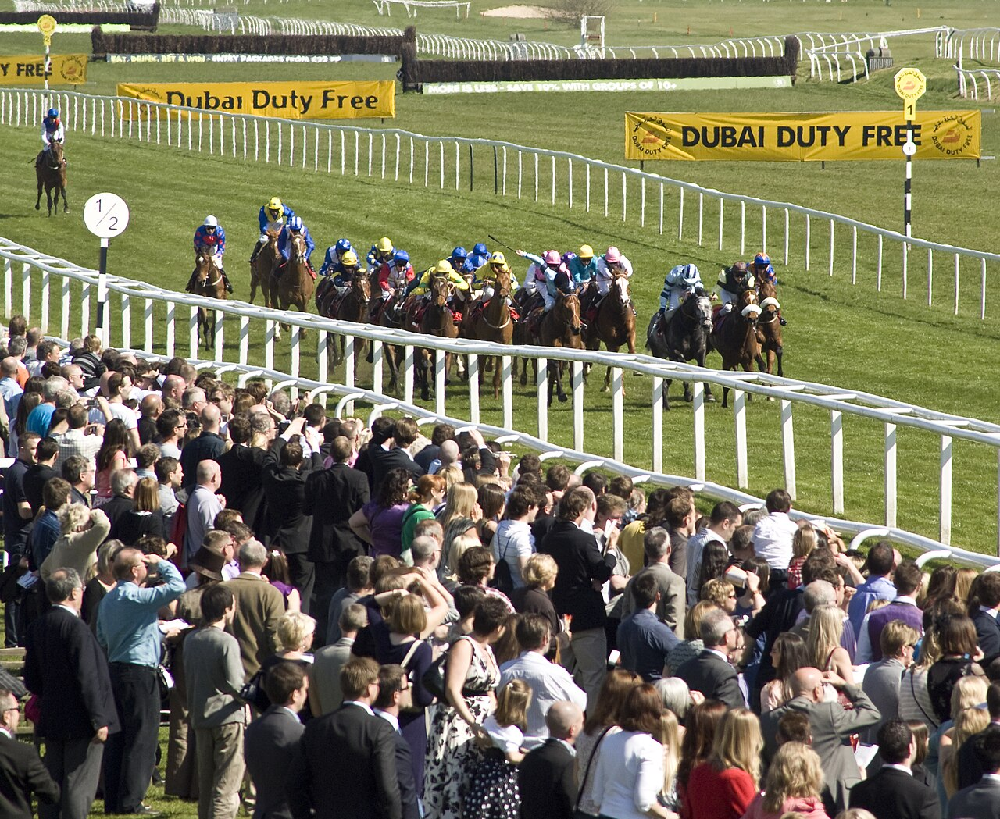

Panic Attack busca en Newbury el primer doblete en la Coral Gold Cup desde Arkle, con un aprendiz que descarga 10 libras
Diecisiete caballos quedaron declarados el jueves para la Coral Gold Cup, el handicap de steeple-chase sobre 3 millas y 2 furlongs (unos 5.200 metros) que Newbury disputa el sábado a las 15:00.

La ganadora del año pasado, Panic Attack, de Dan Skelton, intentará ser la primera en ganar dos ediciones seguidas desde Arkle. Su propietario, Bryan Drew, ha confiado la monta a Dominic Lewis, un aprendiz con solo 12 montas que descarga 10 libras: según el Racing Post, será el primero con ese descargo en salir en esta carrera desde que el periódico tiene registros, en 1988. La yegua corre con 6 libras más que hace un año y llega sin carreras esta temporada.
El favorito es Wendigo, de Jamie Snowden, que ganó en esta misma reunión el año pasado el John Francome Novices' Chase (Grado 2). El más cargado es Regent's Stroll, de Paul Nicholls, segundo en un Grado 1 de Aintree la pasada primavera. Skelton presenta además a Mr Hope Street, con Johnny Burke, porque Harry Skelton monta en Newcastle en la Fighting Fifth.
Willie Mullins, que solo ha ganado una vez la carrera (Total Recall, en 2017), lleva a Road To Home. También están Kap Vert, ganador del Grand National de Escocia, y Havaila, que ganó la bet365 Gold Cup de Sandown y busca su cuarta victoria seguida. Completan el lote Miami Magic, Masaccio, Booster Bob, Myretown, One Big Bang, The Jukebox Kid, Downmexicoway, Here Comes Georgie, Amirite y The Doyen Chief.
El palmarés de la carrera incluye a nueve ganadores de la Cheltenham Gold Cup, entre ellos Denman y Native River. Según el jefe de pista, George Hill, el piso es sobre todo bueno, pero se espera lluvia el viernes por la mañana y una franja más intensa entre el final de la reunión del viernes y el final de la del sábado.
Por Martín Larrañeta